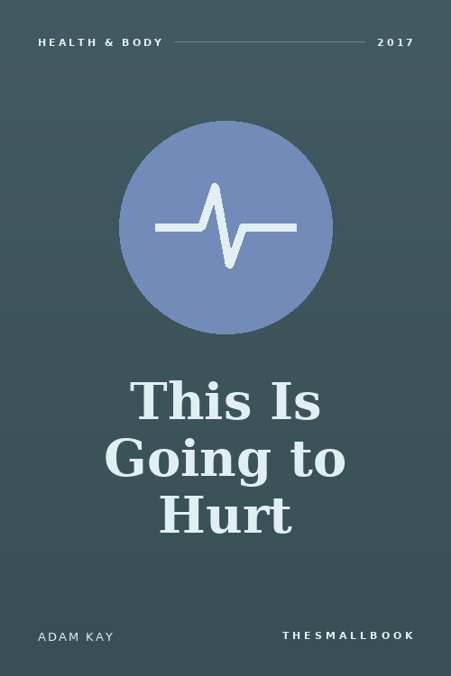

Why Did Medical Error and the Patient Safety Reckoning Fail?
The Third Leading Cause Nobody Charts
What happened
This entry autopsies not a company but a system failure the Institute of Medicine dragged into daylight with its 1999 report To Err Is Human: between 44,000 and 98,000 Americans were dying each year from preventable medical errors in hospitals, more than from car accidents or breast cancer. Later studies argued the true number was higher still. The dead were not killed by rogue incompetents; they were killed by ordinary care delivered through badly designed systems: lookalike drug labels, exhausted residents, illegible orders, handoffs where information evaporated, and a culture that treated error as personal shame, so errors were hidden, repeated and inherited by the next shift. The report's revolution was to borrow aviation's tools, checklists, standardised procedures, blame free reporting, simulation, and aim them at hospitals. Two decades on, safety has measurably improved in targeted areas like central line infections, while the culture change remains unfinished: patients are still harmed by systems that punish disclosure and reward silence. The corpse in this autopsy is an idea, that good people trying hard is a safety system.
The fatal mistake
The system's first error was moral framing: treating mistakes as character flaws guaranteed they would be concealed, so the organisation could never learn faster than individuals suffered. Second, medicine designed for memory and heroism instead of for human limits: marathon shifts, memory based dosing and handwriting as a medical device. Third, hierarchy muted the alarms: nurses and juniors who saw errors coming often could not stop seniors proceeding, the cockpit problem aviation had already solved. Underneath sat misaligned pride: a profession that could not say we harm people at scale could not organise to stop.
The lesson
Design for the human you have at 3 a.m., not the hero of the brochure: checklists, defaults and standardisation are humility made procedural. Make reporting safe or you will fly blind; the errors you punish into hiding are the ones that kill next month's patient. Flatten the authority gradient at the moment of danger: anyone must be able to stop the line. And measure harm in the open. The hospitals that improved fastest were the ones that published their infection rates and let shame do its only useful work, on the system rather than on the nurse.
The antidote book

Adam Kay kept a diary through six years as a junior doctor in the NHS: hilarious, horrifying, and finally unbearable. It is the funniest book ever written about why doctors quit.
READ THE SUMMARY OPEN INTERACTIVE BOOKQuestions people ask about Medical Error and the Patient Safety Reckoning
Why did Medical Error and the Patient Safety Reckoning fail? The system's first error was moral framing: treating mistakes as character flaws guaranteed they would be concealed, so the organisation could never learn faster than individuals suffered. Second, medicine designed for memory and heroism instead of for human limits: marathon shifts, memory based dosing and handwriting as a medical device. Third, hierarchy muted the alarms: nurses and juniors who saw errors coming often could not stop seniors proceeding, the cockpit problem aviation had already solved. Underneath sat misaligned pride: a profession that could not say we harm people at scale could not organise to stop.
How much was lost? Hundreds of thousands of preventable deaths a year, mostly uncounted
What is the lesson? Design for the human you have at 3 a.m., not the hero of the brochure: checklists, defaults and standardisation are humility made procedural. Make reporting safe or you will fly blind; the errors you punish into hiding are the ones that kill next month's patient. Flatten the authority gradient at the moment of danger: anyone must be able to stop the line. And measure harm in the open. The hospitals that improved fastest were the ones that published their infection rates and let shame do its only useful work, on the system rather than on the nurse.
Medical Error and the Patient Safety Reckoning kyun fail hua? In simple English: The system's first error was moral framing: treating mistakes as character flaws guaranteed they would be concealed, so the organisation could never learn faster than individuals suffered. Second, medicine designed for memory and heroism instead of for human... The cost was Hundreds of thousands of preventable deaths a year, mostly uncounted.
Keep digging
More trust and safety failures · Open the full Graveyard
Read the antidote book summary: This Is Going to Hurt
Related failures
- Why did The City of Troy fail? ~1180 BC · The Original Free Gift
- Why did Juul fail? 2022 · The $38B Vaping Empire That Vaporized to Zero
- Why did Jet Airways fail? 2019 · The Founder Who Couldn't Let Go
- Why did Cambridge Analytica fail? 2018 · Harvested 87 Million Friends of Friends
- Why did Grenfell Tower and the Cladding Economy fail? 2017 · The Tower Everyone Was Warned About
- Why did Wells Fargo fail? 2016 · 3.5 Million Fake Accounts, Opened by Its Own Staff
They paid full price. You get the lesson in simple English.